Проект
Квартира ЖК Воксхолл
Квартира собрана на спокойной нейтральной палитре: светлые плоскости, встроенное хранение, теплое дерево и мягкий свет.
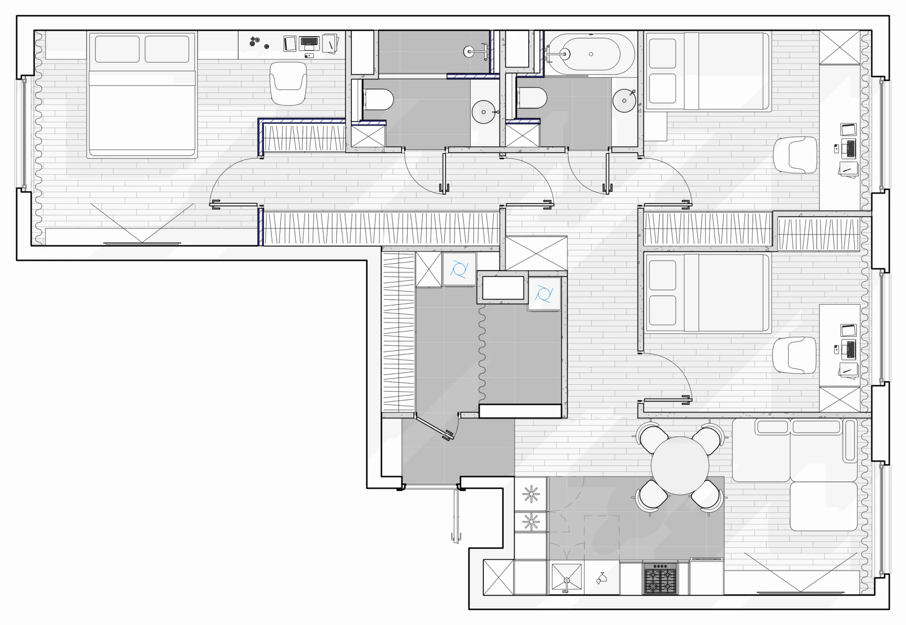
Тип Квартира
Площадь 93.6 м²
Локация г. Москва, Россия
Статус В реализации
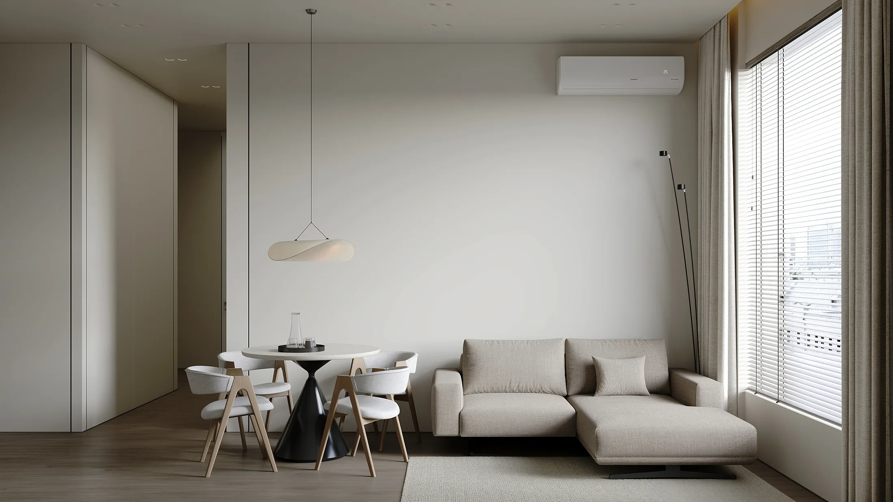
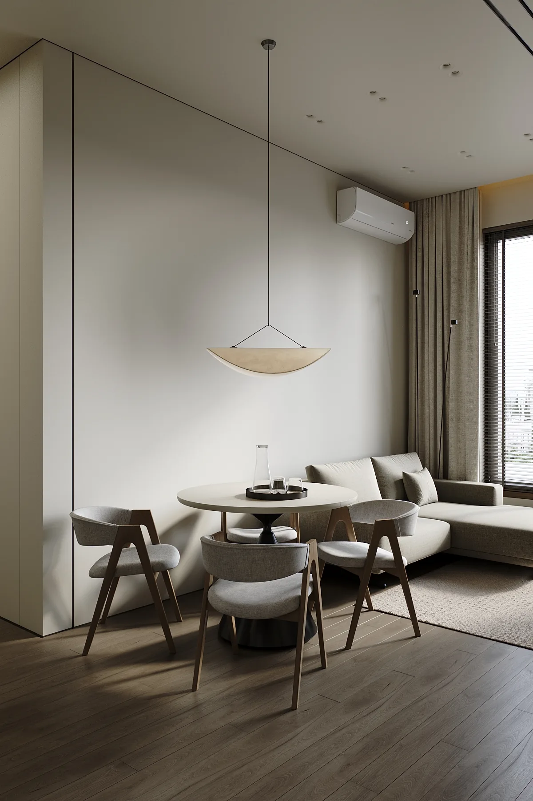

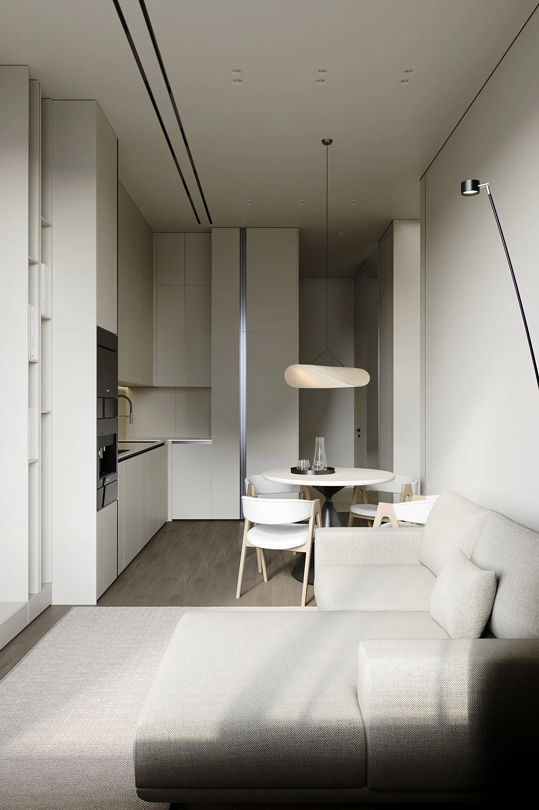

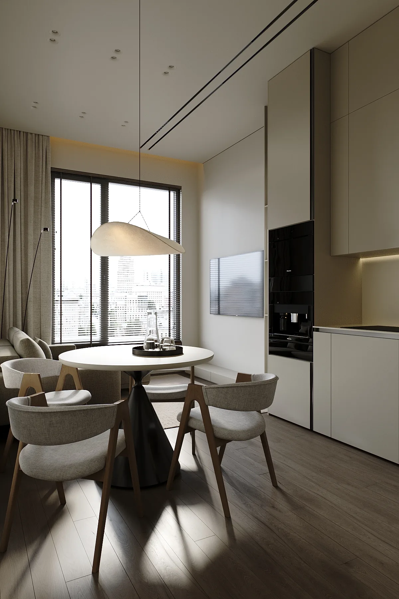
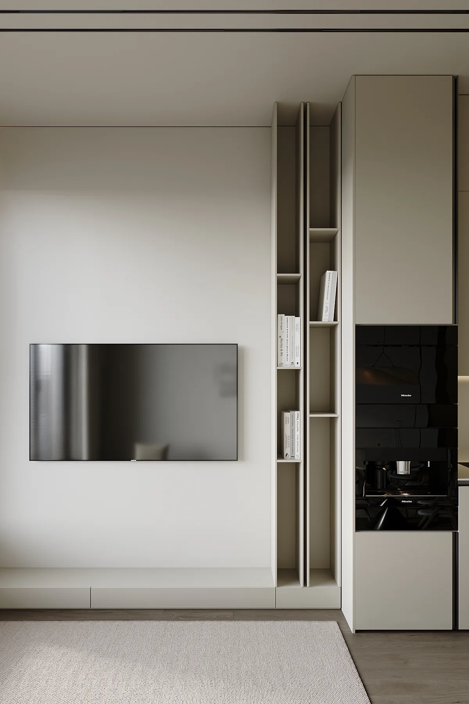

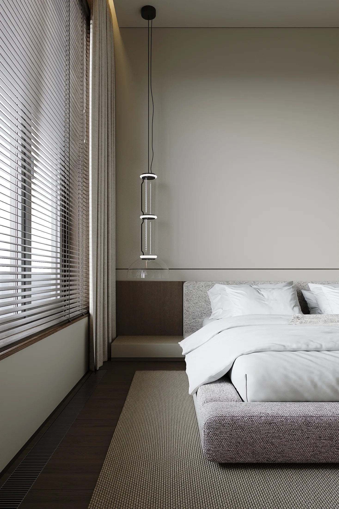
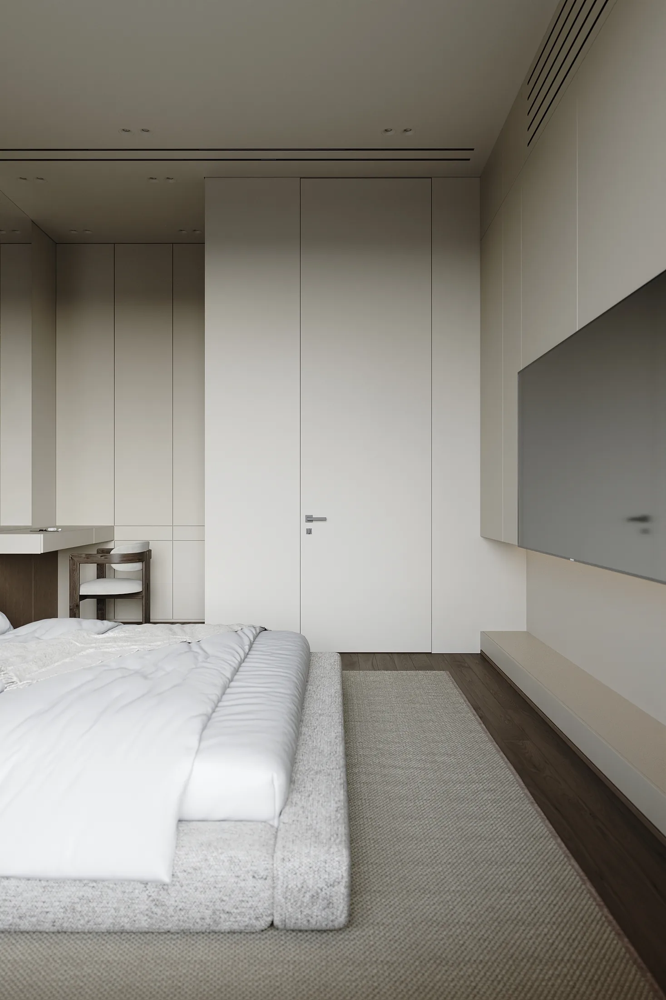

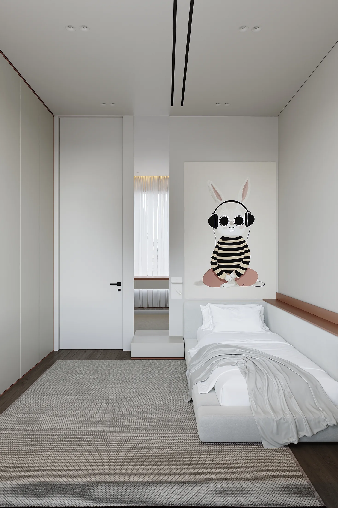


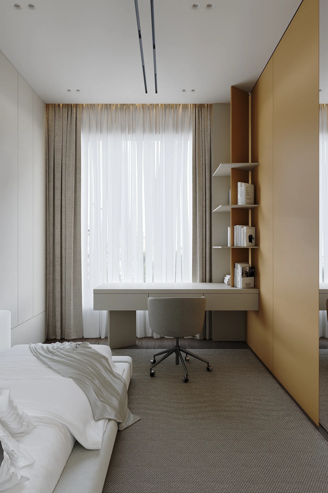

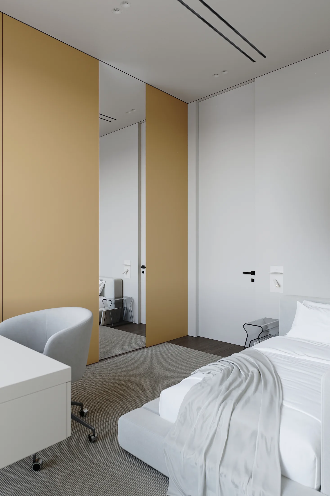
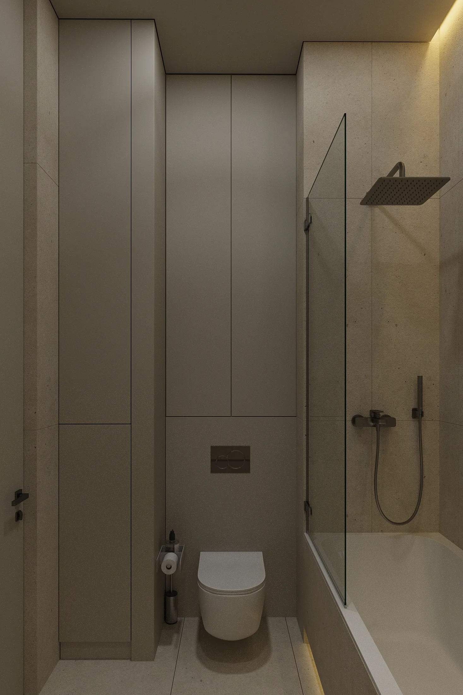
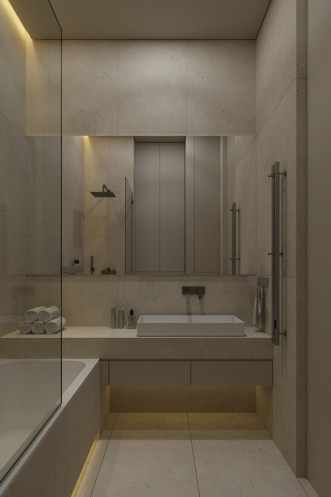

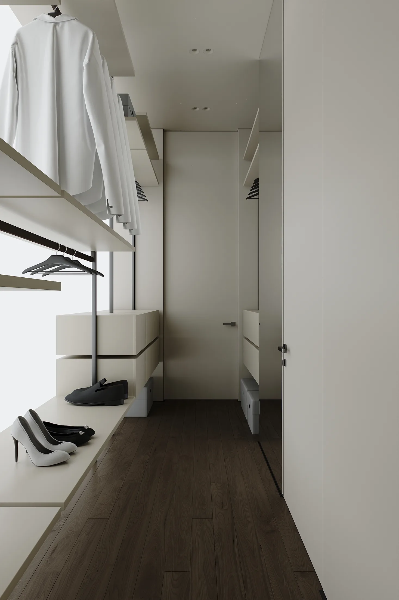